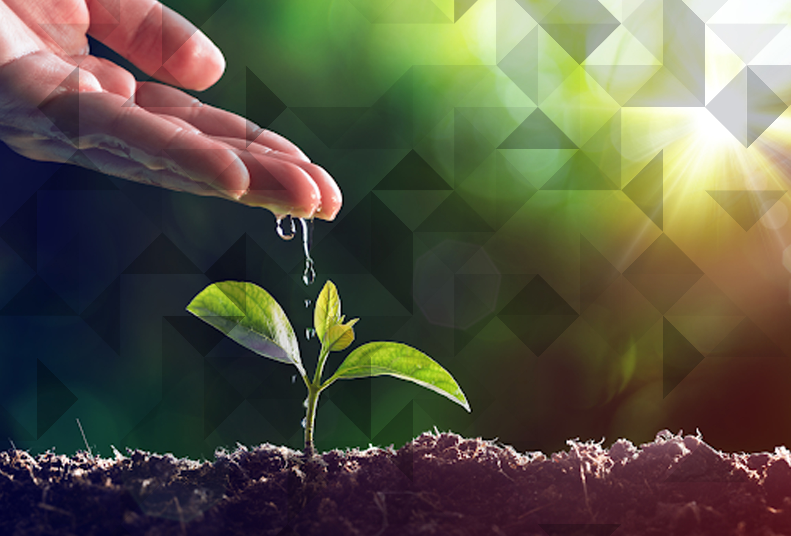

O projeto EcoAção nasceu com o propósito de inspirar e mobilizar pessoas para cuidar do meio ambiente por meio de pequenas ações que fazem grande diferença.Trabalhamos com comunidades locais, escolas e empresas para promover práticas sustentáveis e conscientização ambiental. O meio ambiente é o conjunto de todos os elementos naturais que tornam possível a vida na Terra — como o ar, a água, o solo, as florestas, os animais e o clima. Ele é essencial para nossa sobrevivência, pois fornece recursos fundamentais como o alimento, a água potável e o oxigênio que respiramos. Preservar o meio ambiente é importante porque o equilíbrio da natureza garante a qualidade de vida das gerações atuais e futuras. A poluição, o desmatamento e o desperdício de recursos naturais causam impactos graves, como mudanças climáticas, extinção de espécies e escassez de água. Por isso, pequenas atitudes no dia a dia — como economizar água e energia, separar o lixo, plantar árvores e evitar o uso excessivo de plástico — fazem grande diferença. Cuidar do meio ambiente é cuidar de nós mesmos e do planeta que chamamos de lar.
